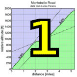
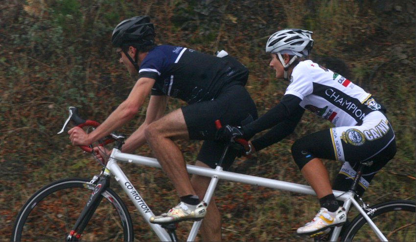

|
 |
|  |
| Brian Lucido and Jennie Phillips killing it on the climb for Sisters and Misters of No Mercy (Lahary Ravuri) |
Thanksgiving, and as is often the case at the tail end of a series, Low-Key danced with the weather and won.
All week the forecasters were predicting heavy rain for Thanksgiving morning, but when Kevin Winterfield checked out the course at 5:30 AM, the night's rains had passed. The temperature at the summit was increasing, up to 42F by 9 am, and the barometric pressure was moving steadily upward. The climb was on!
And what a day it turned into!
The main story at the head of the field was Ireland's Ryan Sherlock and Melanie Spath. Last year they had produced the top times for men and women. But this year, with windy conditions at the summit predicted to produce slower times, each shattered their respective Low-Key records from last year. Ryan and Eric Wohlberg separated themselves from the lead group, to finish in blazing fast times of 71:01 and 72:19. While Melanie cracked the 80 minute barrier with her 79:53, producing the second-highest single-day score for this Low-Key series (behind Jesse Miller-Smith from steep Sierra Road, a climb more conducive to high scores). Melanie also established herself as the "top-rated" climber of 2011 with this result.
But the other big story was for the Low-Key standings. Brian Lucido trailed Tracy Colwell in the overall, while his team Sisters and Misters of No Mercy was behind Pen Velo. It was going to be very, very hard for Brian or the Sisters to prevail with just this one climb left, a climb which traditionally produces relatively low scores at the top due to the dilution of the descents. Yet Brian had a plan: he and teammate Jennie Phillips arrived on his Co-Motion tandem. Jennie's light weight and solid power-to-mass ratio combined with Brian's raw power (he's second in the mass-adjusted climbing ranking, behind Ryan) to produce one heck of a fast-climbing tandem. And together they shattered the Low-Key mixed tandem record for the hill, finishing in a blazing fast 77:11. It was enough to take Brian to the top steps of the men's overall podium. On the team side, the tandem was supported by Kevin Keenan's excellent ride today, arguably his best of the series, to take the overall win.
In the women's overall, the story was the fast-charging Lisa Penzel (team Low-Key) and women's overall leader Helen Casabona. It wasn't going to be easy for Lisa: she needed to finish at least 3:16 ahead of Helen by my pre-day calculations, or the same gap ahead of the pace required to score close to 120 points, whichever was faster. But Lisa showed up ready to play today, scoring an incredible 126 points, exceeded in the women's ranking only by elite-level mountain biker Melanie and Jennie on her tandem. As a result, Lisa is the women's 2011 Low-Key women's champion, and team Low-Key's second person ever to win the overall (Bill Bushnell continuing a 6-year streak as hybrid-electric winner).
The Johnny Hoogland award for 2011 goes to Nils Tikkanen. Nils admits he went too hot into the final corner before the bridge at the start of the final climb and crashed hard on the wet road. Leg bleeding from cuts from hip to ankle, shift lever out of alignment, he was quickly back on his bike to rejoin the lead group, finishing in a spectacular tenth place, locking up tenth overall for the series.
The conditions didn't scare away our junior riders today. Andrew Biscardi was the fastest up the hill with an excellent 82:11, while Andre Swart was next just a minute behind. Adrien Costa stuck to his prescribed training zones, still finishing in a strong 1:25. Riley Auten, Justin Leong, and Andy Giang also had excellent rides on this epic climb.
But another big story for the week was our volunteers. While conditions for most of theclimb were overcast, the summit was locked in the clouds, producing wet, miserable conditions for volunteers. But Howard, Kevin, Pat, Christine, Bill, and Lahary remained at their posts for close to two hours. It was an epic day all around.
Strava T-shirt qualifiers indicated with orange background.
| pl | # | name | team | cat | time | mph | fph | score |
|---|---|---|---|---|---|---|---|---|
| 1 | 523 | Brian Lucido | Sr's & Mr's of No Mercy | Tandem | 77:11 | 14.30 | 3420 | 129.64T |
| 2 | 825 | Ryan Sherlock | Cycleways/Zipvit | 25+ | 71:01 | 15.55 | 3717 | 127.55 |
| 3 | 956 | Eric Wohlberg | The Brown Zone | 45+ | 72:19 | 15.27 | 3650 | 125.26 |
| 4 | 25 | M. Appelman | Dolce Vita Cycling | 40+ | 76:16 | 14.48 | 3461 | 118.77 |
| 5 | 510 | Clark Foy | San Jose Bike Club | 45+ | 76:19 | 14.47 | 3458 | 118.69 |
| 6 | 824 | Kieran Sherlock | Western Wheelers | 45+ | 76:23 | 14.45 | 3455 | 118.59 |
| 7 | 106 | McLovin | The Brown Zone | 1 | 76:40 | 14.40 | 3443 | 118.15 |
| 8 | 7 | James Porter | Western Wheelers | 3 | 77:37 | 14.22 | 3401 | 116.71 |
| 9 | 308 | Rune Dahl | Western Wheelers | 45+ | 78:18 | 14.10 | 3371 | 115.69 |
| 10 | 144 | Nils Tikkanen | Bike Trip/Symantec | Honey Badger | 78:40 | 14.03 | 3355 | 115.15M |
| 11 | 226 | Tom Gardin | Western Wheelers | 45+ | 78:40 | 14.03 | 3355 | 115.15 |
| 12 | 325 | Kevin Keenan | Sr's & Mr's of No Mercy | 55+ | 78:49 | 14.01 | 3349 | 114.93 |
| 13 | 44 | Tim Clark | Low-Key | 40+ | 79:40 | 13.86 | 3313 | 113.70 |
| 14 | 133 | Dai Sieh | The Brown Zone | Robusto | 79:46 | 13.84 | 3309 | 113.56 |
| 15 | 251 | Dan Perry | Bike Trip/Symantec | 40+ | 79:52 | 13.82 | 3305 | 113.42 |
| 16 | 114 | Steve Peck | Western Wheelers | 45+ | 80:29 | 13.72 | 3279 | 112.55 |
| 17 | 261 | Joe Sullivan | San Jose Bike Club | 35+ | 81:07 | 13.61 | 3254 | 111.67 |
| 18 | 63 | Joe Fant | San Jose Bike Club | 50+ | 81:45 | 13.50 | 3229 | 110.81 |
| 19 | 432 | Ken Sato | Bike Trip/Symantec | 45+ | 82:04 | 13.45 | 3216 | 110.38 |
| 20 | 905 | Andrew Biscardi | San Jose Bike Club | Junior | 82:11 | 13.43 | 3212 | 110.22 |
| 21 | 935 | Alan Nevin | IronData Thirsty Bear | 40+ | 82:15 | 13.42 | 3209 | 110.13 |
| 22 | 66 | Klaus Fleischmann | 40= | 82:36 | 13.37 | 3195 | 109.67 | |
| 23 | 952 | Dennis Van Hoof | 82:44 | 13.34 | 3190 | 109.49 | ||
| 24 | 512 | Mario Hernandez | Audi | 3 | 83:15 | 13.26 | 3170 | 108.81 |
| 25 | 950 | Andre Swart | LGBRC | Junior | 83:19 | 13.25 | 3168 | 108.72 |
| 26 | 919 | Steve Fielding | Sr's & Mr's of No Mercy | 45+ | 83:29 | 13.22 | 3162 | 108.50 |
| 27 | 61 | Steven Enns | Dirkless | 84:28 | 13.07 | 3125 | 107.24 | |
| 28 | 70 | Bruce Gardner | Sr's & Mr's of No Mercy | 40+ | 85:01 | 12.99 | 3105 | 106.55 |
| 29 | 928 | Jonathan Krier | Third pillar | U23 | 85:13 | 12.96 | 3097 | 106.30 |
| 30 | 807 | Adrien Costa | Chipotle Junior Development | Junior | 85:14 | 12.95 | 3097 | 106.28 |
| 31 | 240 | Paul McKenzie | Marc Pro - Strava | 55+ | 85:40 | 12.89 | 3081 | 105.74 |
| 32 | 105 | Russ McCrary | Sr's & Mr's of No Mercy | 50+ | 85:50 | 12.86 | 3075 | 105.53 |
| 33 | 943 | Dan Ross | Rad Racing | 30+ | 85:54 | 12.85 | 3073 | 105.45 |
| 34 | 126 | Denin Sahovic | The Brown Zone | 35+ | 85:58 | 12.84 | 3070 | 105.37 |
| 35 | 92 | KP | The Brown Zone | None Of Your Bee'S Wax | 86:26 | 12.77 | 3054 | 104.80 |
| 36 | 96 | Bennett Chi Lee | Speedy Bees | 45+/Ponytail | 86:36 | 12.75 | 3048 | 104.60 |
| 37 | 127 | Naoto Sato | 45+ | 86:40 | 12.74 | 3045 | 104.52 | |
| 38 | 941 | Martin Pieprzyk | 30+ | 86:47 | 12.72 | 3041 | 104.38 | |
| 39 | 78 | Tick Houk | The Brown Zone | 50+ | 87:10 | 12.67 | 3028 | 103.92 |
| 40 | 924 | Arturo B Galindo | San Jose Bike Club | 87:44 | 12.58 | 3008 | 103.25 | |
| 41 | 942 | Manuel Puentes | San Jose Bike Club | 5 Age 25 | 87:47 | 12.58 | 3007 | 103.19 |
| 42 | 936 | Chris New | 45+ | 88:03 | 12.54 | 2998 | 102.88 | |
| 43 | 944 | Mike Salameh | Soviet Flyers | 55+ | 88:21 | 12.50 | 2987 | 102.53 |
| 44 | 257 | Takanobu Seimiya | Nikon Cycling Club | 40+ | 89:08 | 12.39 | 2961 | 101.63 |
| 45 | 702 | Nate Cauffman | UID | 30+ | 89:18 | 12.36 | 2956 | 101.44 |
| 46 | 95 | Dean Larson | The Brown Zone | 45+ | 90:29 | 12.20 | 2917 | 100.11 |
| 47 | 312 | Rick Ferrell | Bike Trip/Symantec | 50+ | 90:41 | 12.17 | 2911 | 99.89 |
| 48 | 267 | Alan Weatherall | San Jose Bike Club | 90:45 | 12.17 | 2908 | 99.82 | |
| 49 | 965 | David Kelly | 90:52 | 12.15 | 2905 | 99.69 | ||
| 50 | 311 | Brian Edwards | Dirkless | 91:22 | 12.08 | 2889 | 99.14 | |
| 51 | 933 | Peter Merrill | Western Wheelers | 55+ | 91:34 | 12.06 | 2882 | 98.93 |
| 52 | 932 | Steve Matson | 60+ | 91:37 | 12.05 | 2881 | 98.87 | |
| 53 | 722 | Peter Tapscott | Webcor/Alto Velo | 60+ | 92:08 | 11.98 | 2865 | 98.32 |
| 54 | 310 | Giles Douglas | 35+ | 93:15 | 11.84 | 2830 | 97.14 | |
| 55 | 929 | Weston Lane | yippee | 20+ | 93:54 | 11.76 | 2811 | 96.47 |
| 56 | 120 | Vinay Ravuri | Georgia Tech | 94:04 | 11.74 | 2806 | 96.30 | |
| 57 | 117 | Bill Preucel | Sr's & Mr's of No Mercy | 45+ | 94:44 | 11.65 | 2786 | 95.62L |
| 58 | 964 | Ryan Gibson | 95:14 | 11.59 | 2772 | 95.12 | ||
| 59 | 148 | David Vrane | Sr's & Mr's of No Mercy | 45+ | 95:16 | 11.59 | 2771 | 95.08 |
| 60 | 418 | Miro Miklos | 30+ | 95:40 | 11.54 | 2759 | 94.69 | |
| 61 | 963 | Blas Garcia | 95:58 | 11.50 | 2750 | 94.39 | ||
| 62 | 331 | Christopher O'Keefe | Atomic Bonk | 45+ | 96:32 | 11.44 | 2734 | 93.84 |
| 63 | 55 | Jon Degenhardt | Alameda Velo | 50+ | 96:52 | 11.40 | 2725 | 93.51 |
| 64 | 153 | Jim Williams | Alberto's Steak House | 60+ | 97:53 | 11.28 | 2696 | 92.54 |
| 65 | 305 | Gino Cetani | 99% | 40+ | 98:09 | 11.25 | 2689 | 92.29 |
| 66 | 232 | Franz Kelsch | Alberto's Steak House | 60+ | 101:37 | 10.86 | 2597 | 89.14 |
| 67 | 266 | Jonathan Walden | 45+ | 101:43 | 10.85 | 2595 | 89.05 | |
| 68 | 35 | Nic Brummell | Atlas | 50+ | 102:05 | 10.81 | 2586 | 88.73 |
| 69 | 313 | David Fitch | Western Wheelers | 65+++ | 102:07 | 10.81 | 2585 | 88.71 |
| 70 | 724 | Walter Wang | Peninsula Bible Church Cupertino | 35+ | 102:20 | 10.79 | 2579 | 88.52 |
| 71 | 962 | Oscar Garcia | 102:26 | 10.78 | 2577 | 88.43 | ||
| 72 | 717 | Cory Roay | Pen Velo/Pomodoro | 50+ | 102:51 | 10.73 | 2566 | 88.07 |
| 73 | 28 | Jan Berka | 45+ | 103:21 | 10.68 | 2554 | 87.65 | |
| 74 | 57 | Frank Drobot | 60+ | 103:57 | 10.62 | 2539 | 87.14 | |
| 75 | 274 | Riley Auten | Silicon Valley Triathlon | Junior | 104:20 | 10.58 | 2530 | 86.82 |
| 76 | 931 | Stephen Martin | 40+ | 106:38 | 10.35 | 2475 | 84.95 | |
| 77 | 97 | Justin Leong | San Jose Bike Club | Junior | 107:46 | 10.24 | 2449 | 84.06 |
| 78 | 913 | Florian Costa | San Jose Bike Club | 107:58 | 10.23 | 2445 | 83.90 | |
| 79 | 76 | Jerry Hitchcock | Wolfpack | 55+ | 108:25 | 10.18 | 2434 | 83.55 |
| 80 | 403 | Bernard Bell | 50+ | 108:25 | 10.18 | 2434 | 83.55 | |
| 81 | 412 | Jon Glancy | Dirkless | 110:37 | 9.98 | 2386 | 81.89 | |
| 82 | 951 | Gary Swart | LGBRC | 55+ | 110:52 | 9.96 | 2381 | 81.70 |
| 83 | 531 | Plamen Velikov | SLACer | 50+ | 113:52 | 9.70 | 2318 | 79.55 |
| 84 | 146 | Luis Valente | Palo Verde Velo | 50+ | 113:57 | 9.69 | 2316 | 79.49 |
| 85 | 915 | Jesse Dill | 25+ | 114:56 | 9.61 | 2296 | 78.81 | |
| 86 | 68 | Stephen Fong | San Jose Bike Club | 5 | 119:46 | 9.22 | 2204 | 75.63 |
| 87 | 223 | Bill Dvorak | 55+ | 120:42 | 9.15 | 2187 | 75.05 | |
| 88 | 46 | Kevin Colagiovanni | Team DUD | 25+ | 122:22 | 9.02 | 2157 | 74.03 |
| 89 | 914 | Thierry Costa | San Jose Bike Club | 123:19 | 8.95 | 2140 | 73.46 | |
| 90 | 118 | Alec Proudfoot | 45+ | 124:15 | 8.89 | 2124 | 72.90 | |
| 91 | 954 | Jim Wholey | 65+ | 124:30 | 8.87 | 2120 | 72.76 | |
| 92 | 906 | David Bradley | ACTC | 50+ | 125:56 | 8.77 | 2096 | 71.93 |
| 93 | 925 | Andy Giang | Junior | 138:17 | 7.98 | 1909 | 65.51 | |
| 94 | 904 | Jason Beck | Team Death Before Suckass | 30+ | 140:29 | 7.86 | 1879 | 64.48 |
| 95 | 22 | Michael Ahern | LGBRC | 45+ | 142:37 | 7.74 | 1851 | 63.52 |
| 96 | 948 | Thomas Stevenin | 50 Yrs Old | 143:36 | 7.69 | 1838 | 63.08 | |
| 97 | 29 | Sachin Bhatia | 30+ | 144:12 | 7.66 | 1830 | 62.82 | |
| 98 | 517 | Ashutosh Kaushik | 25+ | 157:58 | 6.99 | 1671 | 57.34 | |
| 99 | 923 | Steve Froess | no team | 45+ | 160:46 | 6.87 | 1642 | 56.34 |
| 100 | 927 | Liubomir Krastev | 165:00 | 6.69 | 1600 | 54.90 |
| pl | # | name | team | cat | time | mph | fph | score |
|---|---|---|---|---|---|---|---|---|
| 1 | 947 | Melanie Spath | 30+ | 79:53 | 13.82 | 3304 | 137.12 | |
| 2 | 423 | Jennie Phillips | Sr's & Mr's of No Mercy | Tandem-Onium! | 77:11 | 14.30 | 3420 | 129.64T |
| 3 | 250 | Lisa Penzel | Low-Key | 45+ | 86:53 | 12.71 | 3038 | 126.07 |
| 4 | 40 | Helen Casabona | Pen Velo/Pomodoro | 50+ | 92:37 | 11.92 | 2850 | 118.26 |
| 5 | 812 | LT | The Brown Zone | This Is The Off Season? | 93:57 | 11.75 | 2809 | 116.59 |
| 6 | 714 | McLovely | The Brown Zone | 1 | 94:05 | 11.73 | 2805 | 116.42 |
| 7 | 957 | Robin Young | 20+ | 96:21 | 11.46 | 2739 | 113.68 | |
| 8 | 131 | Lynn Sestak | San Jose Bike Club | 50+ | 97:52 | 11.28 | 2697 | 111.92 |
| 9 | 934 | Lucia Mokres | LGBRC | MIA | 99:43 | 11.07 | 2647 | 109.84 |
| 10 | 912 | Katelyn Connell | 25+ | 103:27 | 10.67 | 2551 | 105.88 | |
| 11 | 520 | Kstiv | The Brown Zone | 40+ | 104:19 | 10.58 | 2530 | 105.00 |
| 12 | 922 | Gabrielle Friedly | 127:04 | 8.69 | 2077 | 86.20 | ||
| 13 | 306 | Alison Chaiken | Sr's & Mr's of No Mercy | 45+ | 131:49 | 8.38 | 2002 | 83.09 |
| 14 | 955 | Louise Wholey | Freeze your buns | 70+ | 138:46 | 7.96 | 1902 | 78.93 |
| pl | team | score | riders |
|---|---|---|---|
| 1 | Sr's & Mr's of No Mercy | 374.20 | Jennie Phillips, Brian Lucido, Kevin Keenan, Steve Fielding, Bruce Gardner, Russ McCrary, Bill Preucel, David Vrane, Alison Chaiken |
| 2 | The Brown Zone | 360.00 | Eric Wohlberg, McLovin, Dai Sieh, Denin Sahovic, KP, Tick Houk, Dean Larson, LT, McLovely, Kstiv |
| 3 | Western Wheelers | 350.98 | Kieran Sherlock, James Porter, Rune Dahl, Tom Gardin, Steve Peck, Peter Merrill, David Fitch |
| 4 | San Jose Bike Club | 342.28 | Clark Foy, Joe Sullivan, Joe Fant, Andrew Biscardi, Arturo B Galindo, Manuel Puentes, Alan Weatherall, Lynn Sestak, Justin Leong, Florian Costa, Stephen Fong, Thierry Costa |
| 5 | Bike Trip/Symantec | 338.94 | Nils Tikkanen, Dan Perry, Ken Sato, Rick Ferrell |
| 6 | LGBRC | 300.27 | Andre Swart, Lucia Mokres, Gary Swart, Michael Ahern |
| 7 | Dirkless | 288.27 | Steven Enns, Brian Edwards, Jon Glancy |
| 8 | 265.16 | Giles Douglas, Ryan Gibson, Alec Proudfoot | |
| 9 | Low-Key | 239.77 | Tim Clark, Lisa Penzel |
| 10 | Pen Velo/Pomodoro | 206.34 | Helen Casabona, Cory Roay |
| 11 | Alberto's Steak House | 181.68 | Jim Williams, Franz Kelsch |
| 12 | Cycleways/Zipvit | 127.55 | Ryan Sherlock |
| 13 | Dolce Vita Cycling | 118.77 | M. Appelman |
| 14 | IronData Thirsty Bear | 110.13 | Alan Nevin |
| 15 | Audi | 108.81 | Mario Hernandez |
| 16 | Third pillar | 106.30 | Jonathan Krier |
| 17 | Chipotle Junior Development | 106.28 | Adrien Costa |
| 18 | Marc Pro - Strava | 105.74 | Paul McKenzie |
| 19 | Rad Racing | 105.45 | Dan Ross |
| 20 | Speedy Bees | 104.60 | Bennett Chi Lee |
| 21 | Soviet Flyers | 102.53 | Mike Salameh |
| 22 | Nikon Cycling Club | 101.63 | Takanobu Seimiya |
| 23 | UID | 101.44 | Nate Cauffman |
| 24 | Webcor/Alto Velo | 98.32 | Peter Tapscott |
| 25 | yippee | 96.47 | Weston Lane |
| 26 | Georgia Tech | 96.30 | Vinay Ravuri |
| 27 | Atomic Bonk | 93.84 | Christopher O'Keefe |
| 28 | Alameda Velo | 93.51 | Jon Degenhardt |
| 29 | 99% | 92.29 | Gino Cetani |
| 30 | Atlas | 88.73 | Nic Brummell |
| 31 | Peninsula Bible Church Cupertino | 88.52 | Walter Wang |
| 32 | Silicon Valley Triathlon | 86.82 | Riley Auten |
| 33 | Wolfpack | 83.55 | Jerry Hitchcock |
| 34 | SLACer | 79.55 | Plamen Velikov |
| 35 | Palo Verde Velo | 79.49 | Luis Valente |
| 36 | Freeze your buns | 78.93 | Louise Wholey |
| 37 | Team DUD | 74.03 | Kevin Colagiovanni |
| 38 | ACTC | 71.93 | David Bradley |
| 39 | Team Death Before Suckass | 64.48 | Jason Beck |
| 40 | no team | 56.34 | Steve Froess |